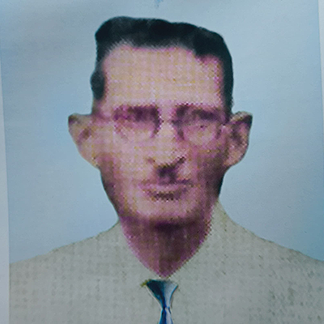
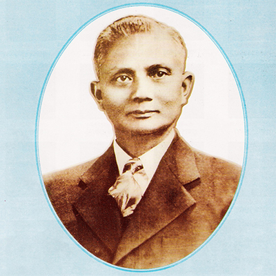
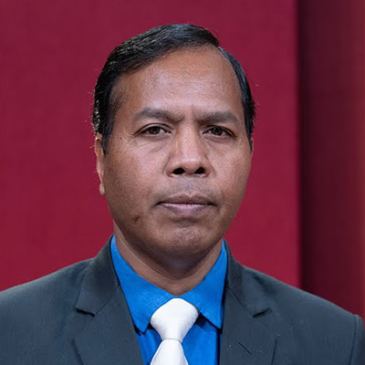

THE ORIGIN
The Church of God Meghalaya & Assam has an indigenous origin. This
‘indigenous’ indicates that the Church of God in Meghalaya
and Assam was started by the native persons and not by the foreign
persons or by foreign missionaries. This shows that from the very
beginning the Church of God has a local leadership. This name
‘Church of God’ is found written or recorded in the Bible
many times. These pioneers adopted this name because they felt more
suitable to use it. It is a fact which Jesus himself said “On this rock
I will build my Church” (Mt.16:18). This indicates that Jesus is the
Lord of the Church. Apostle Paul in many occasions tried to explain that
this Church which has started and built by Jesus who is the Son of God
must be the Church of God. For example, Paul said “The Church of God
which is at Corinth” (I Corinth 1:2). Like Paul Luke also recorded about
the Church of God. He said “The Church of God which He purchased with
His own Blood”(Acts 20:28). Luke gives a clear indication that the
Church of God has been purchased or redeemed by the precious blood of
Jesus Christ.
It is an undeniable fact that the pioneers of the Church of God in
Meghalaya and Assam were identified as Rev. J.J.M. Nichols-Roy Syiemlieh
and Rev. Wolley Mohan Roy Laitphlang. The so-called the Church of God
was officially formed in 1902. It was Mr. Wolley Mohan Roy Laitphlang
and Mr. Joy Mohan Roy (Later on known as Rev. J.J.M. Nichols-Roy) and
Mr. Jobin Roy Khain and Mr. E. Dhorum were also the founding members of
the Church of God.
Though the Church of God was established by Khasi leaders yet the ideas
that were to lead to its establishment may also come from other people
by way of giving some suggestions how to abide to the Biblical
principles. For instance, the leaders of the Salvation Army speak that
salvation is possible to have and experience in this world of here and
now. The leaders the Baptist Church seems to have suggested that real
and Biblical Baptism is the immersion Baptism as it was baptized in the
river Jordan.
A reading of the history of the Church of God is thus becoming
important. However, given the significance of an ecumenical perception
in today's thinking, it is more important to look at it in the light of
an over all Christian role among the hill people in the 19th and 20th
centuries and from a historical perspective. Given that, this essay will
deal with the historical background, influence of the British
government, Christian Missions and Churches; Pioneers of the Church of
God and impact on the hill people.
PIONEERS OF THE CHURCH

(L) Rev. Wolley M Roy
Church's Pioneer
1873 — 1940

(L) Rev. J. J. M Nichols-Roy
Church's Pioneer
1884 — 1959
Wolley Mohan Roy and Joy Mohan Roy
One day Mr. Wolley Mohan Roy and Joy Mohan Roy met together in Shillong.
They shared their theological experiences. Surprisingly they found that
they have similar theological experiences. In reality they did not know
each other. It was Bah Dino Dkhar (the younger brother of Mr. Sib Charan
Roy) who at first introduced Mr. Joy Mohan Roy to Mr. Wolley Mohan Roy
in Shillong in the year 1901. Since that time, they became great
friends. Both of them committed themselves to preach and proclaim the
Gospel of Jesus Christ. Within no time other members like Mr. Jobin Roy
Khain and Mr. E. Dhorom joined the group of Wolley Mohan Roy and Joy
Mohan Roy.
Four members were baptized
The Church of God began in actuality in 1902 in which four members were
baptized at Mylliem Nongbet in 1902. In this way the new Church known as
the Church of God which is known in the local Khasi language as ‘Ka
Balang U Blei’ was officially formed. This indicates that the Church of
God was under the local leadership which may be called an indigenous
Church. The theological teachings were based on the Bible as the
authentic word of God. Here it may be mentioned that the main
theological teachings of the Church of God are Repentance, Holiness,
Immersion Baptism and Foot washing.
The leaders of the Church of God emphasized a new life style of
holiness. It rejects child baptism because children should be dedicated
to God and not Baptism. For instance, immersion baptism is not possible
for the children. The leaders of the Church of God rejected the
statement made by other Churches. For example, “I am a sinner. He is a
sinner. You are a sinner. They are sinners” The leaders of the Church of
God agreed in principle that human beings are sinful. But they believed
that the power of our sinful nature could be overcome by the grace of
God in Jesus Christ the Savior. They believe that it is through faith in
Jesus that brings to us a regenerated life. It is for this reason
repentance should be followed by Immersion baptism.
The family of Nichols-Roy
Again, it may be mentioned the new Church formed by Mr. Joy Mohan Roy
and Wolley Mohan Roy faced so much of financial problems at the initial
stage. For instance, Joy Mohan Roy left Khasi hills to continue his
studies in Calcutta. He left behind a small group of church members and
evangelists without any financial support. In fact, those who formed the
Church of God had to resign their jobs with a view to work for the
Gospel of Jesus Christ. The leaders were without an income. While he was
in Calcutta (Kolkata) Mr. Joy Mohan Roy met some Christian friends. In
the process of sharing of faith they came to know that they have a
similar faith experience in Jesus Christ. One of them was John A. D.
Khan, a Muslim convert, who had already established contacts with the
Church of God in Anderson, U.S.A, in 1903. It happened that some
American friends invited John A.D. Khan to visit the Church of God in
U.S.A. Consequently, Khan visited the Church of God in U.S.A. and
returned to Calcutta in 1904 with a group of Anderson Church of God
members. Amazingly, one among young American lady who visited India was
Miss Nora Evalyn Nichols who later became the wife of Joy Mohan Roy. At
that time Joy Mohan Roy completed his Bachelor of Arts Degree in
Philosophy from the Calcutta University.
It may be noted that soon the missionaries who came from America left
for their homes except for Miss Nora Evalyne Nichols who preferred to
stay back in the Khasi Hills in order to fulfill her commitment to work
among the Khasi women. It may be noteworthy to mention that in 1907 she
married Mr. Joy Mohan Roy. They adopted a family name known as
“Nichols-Roy”.
The Growth of The Church
It may be mentioned that the growth of the Church was quite steady.
Today it has many local churches established in more than 700 villages
over the Khasi Hills, Jaintia Hills and Garo Hills. Today we have a
total of more than 2 lakhs membership. It may be mentioned that the
ecclesiastical structure of the Church of God in Meghalaya and Assam was
well structured and designed. It has local committees within local
Churches. It also organized some circle levels, District levels and
Assembly level. Regarding the Business management it has the Business
Association. This is an administrative body formed by the
representatives of different levels
It was in the year 1978 the body that looks after the spiritual matter
was formed. It is called the “Pastors’ Fellowship”. This body comprises
all ordained ministers of the Church of God, Meghalaya and Assam. It is
looking and supervising the spiritual works, like Ordination,
appointment of the Church workers, transfer or reshuffle of the Church
workers from one area to the other and all those areas which are falling
under the spiritual matters of the Church. It created few integrated
Ministries, like the Mission Board, Women Department, Youth Department,
Sunday Schools, Nichols-Roy Bible College, Child Sponsorship Programme,
Evangelism Department and other ecclesiastical ministries including the
Media Ministry. The Church of God Business Association is exercising its
power in the sense to look after the general administration like
financial matters, Education, properties and other matters except the
spiritual realm of the Church.
Conclusion
At the initial stage the Church of God in Meghalaya and Assam did not
emphasize to have theological training. The Church of God Business
Association was a sole deciding power in most of the Church affairs till
1977. Till today the Church of God in Meghalaya and Assam did not give
any emphasis to ordain any woman Church worker. In 1982 the Church of
God changed its theological stand. It started a Bible School in 1982 at
Qualapatty, Shillong. In 1992 it upgraded the Bible School into the
College level. Since the year 1979 the young Church workers were
encouraged to have theological training in Cherra Theological College,
Sohra but some were sent to have B.Th and B.D. Degrees in Union Biblical
Seminary, Pune.
In the year 2018 the Church of God Business Association opened a secular
College known as J.J.M. Nichols-Roy College, at Qualapatty,
Shillong. It may be also mentioned that the Church of God takes up some
publication of religious books. For example this was started since the
year 1905. The Church magazine entitled
“The Light of the Gospel” is still continuing even today. An
indigenous publication entitled
Ki Jingrwai Shem Mynsiem (The Experienced Spiritual Songs) was
started more than a hundred years. It may be mentioned that today there
are more than
100 Primary Schools, 3 Middle English Schools and 3 Secondary
Schools, and 2 Higher secondary schools. Perhaps, one of the most distinctive features of the Church works is
the practice - of divine healing (This kind of healing is not a magic
but a reality). Many people have been healed through prayers and
fasting. The growth of the church has generally been attributed to its
healing ministry. The members of the church are mostly the poor and the
illiterate people in the rural areas. But till today the Church did not
have any Medical Centre and medical services but this does not mean
medical treatment be desisted or rejected.

Information Curated By:
Rev. Dr. S. K Syiemlieh
General Secretary
Pastors Fellowship, COG (M&A)
Doctor Of Ministry, Serampur College (University)